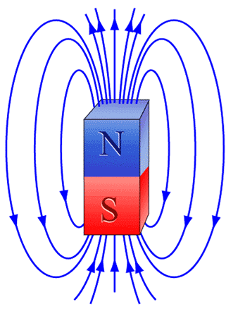
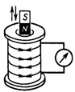
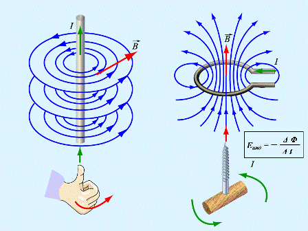
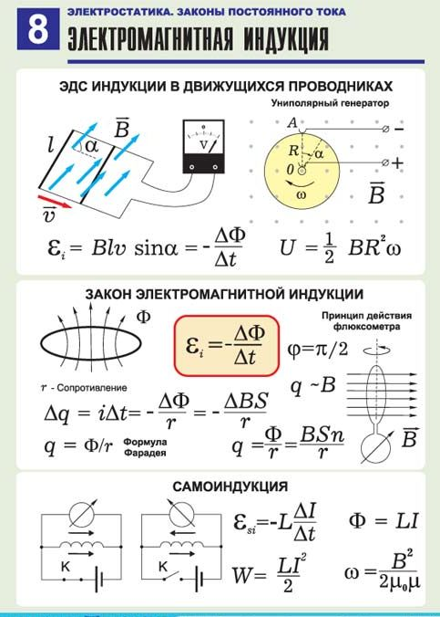

1.1.6. Магнитное поле и электромагнитная индукция

Магни́тное по́ле — силовое поле, действующее на движущиеся электрические заряды и на тела, обладающие магнитным моментом, независимо от состояния их движения. Магнитное поле может создаваться током заряженных частиц, либо магнитными моментами электронов в атомах (постоянные магниты). Кроме этого, оно появляется при наличии изменяющегося во времени электрического поля. Основной характеристикой магнитного поля является его сила, определяемая вектором магнитной индукции B (вектор индукции магнитного поля). В СИ магнитная индукция измеряется в Теслах (Тл).
Магнитное поле — это особый вид материи, посредством которой осуществляется взаимодействие между движущимися заряженными частицами или телами, обладающими магнитным моментом. Можно также рассматривать магнитное поле как релятивистскую составляющую электрического поля. Точнее, магнитные поля являются необходимым следствием существования электрических полей и специальной теории относительности.
Вместе, магнитное и электрическое поля образуют электромагнитное поле, проявлениями которого являются свет и прочие электромагнитные волны.

Электромагнитная индукция — явление возникновения электрического тока в замкнутом контуре при изменении магнитного потока, проходящего через него. Электромагнитная индукция была открыта Майклом Фарадеем в 1831 году. Он обнаружил, что электродвижущая сила, возникающая в замкнутом проводящем контуре, пропорциональна скорости изменения магнитного потока через поверхность, ограниченную этим контуром. Величина электродвижущей силы (ЭДС) не зависит от того, что является причиной изменения потока — изменение самого магнитного поля или движение контура (или его части) в магнитном поле. Электрический ток, вызванный этой ЭДС, называется индукционным током.

Согласно закону Фарадея, ЭДС индукции Ei в контуре прямо пропорциональна скорости изменения магнитного потока (потока вектора магнитной индукции) Ф через поверхность S, ограниченную этим контуром:
Здесь ΔФ — изменение магнитного потока через контур за время Δt; коэффициент пропорциональности k в системе СИ равен k = 1. Знак минус определяет направление индукционного тока в соответствии с правилом Ленца: индукционный ток имеет такое направление, что создаваемый им поток магнитной индукции через площадь, ограниченную контуром, стремится препятствовать тому изменению потока Ф, которое вызывает появление индукционного тока.
В постоянном магнитном поле ЭДС индукции возникает лишь при таком движении контура, при котором магнитный поток через поверхность, ограниченную контуром, изменяется во времени (т. е. контур при своём движении должен пересекать линии магнитной индукции; при движении вдоль линий поток Ф меняться не будет и ЭДС не возникнет). В этом случае ЭДС индукции равна работе магнитной части силы Лоренца по перемещению единичного заряда вдоль замкнутого контура. Если же неподвижный проводник находится в переменном магнитном поле, то ЭДС индукции равна работе по перемещению единичного заряда вдоль замкнутого контура, совершаемой силами вихревого электрического поля, которое, согласно уравнениям Максвелла, порождается в пространстве при изменении магнитного поля со временем. В системе отсчёта, относительно которой контур покоится, именно это вихревое электрическое поле вызывает движение заряженных частиц, т. е. появление индукционного тока. Электромагнитная индукция лежит в основе работы генераторов электрического тока, в которых механическая энергия преобразуется в электрическую; на этом же явлении основано действие трансформаторов.
Для конспекта
